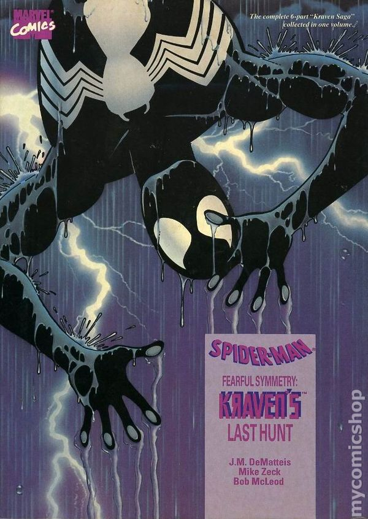
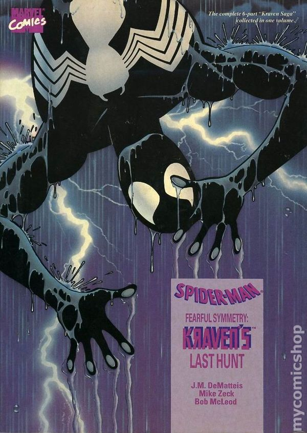
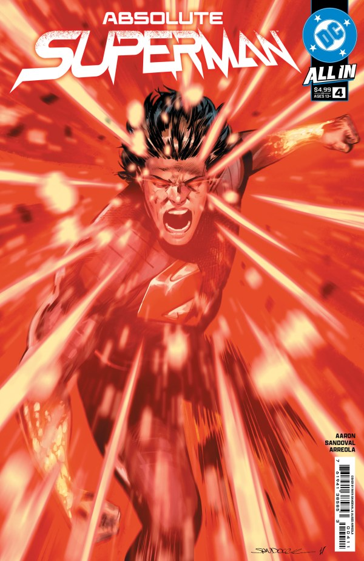

← Back
Hobo's Blog
psst... mobile users, view in desktop mode for a navigation menu
What I Read This Week (2/26/25)
Absolute Wonder Woman #5: Amazing conclusion to the first arc. Her becoming Medusea was CRAZY!!!!! I am on edge waiting for the next issue. It's so sad what happened to the Wonder Woman video game this week. I was so excited for it, and now it'll never happen. That on top of no announcements on anything Wonder Woman yesterday makes it a really hard time to be a Wonder Woman fan. Absolute is probably our best chance at some decent Wonder Woman nowadays. I really hope Gunn wakes up and realizes the fans want more of her. No much use in having a "trinity" if only 2 of them actually get any publicity.
The Amazing Spider-Man #68.DEATHS: I started reading the 8 Deaths of Spider-Man since the whole arc ends during the One World Under Doom event, and I want to be ready for his new #1 in April. Good shit! I love seeing the X-Men show up in anything. With that being said, where the fuck was Spidey? this is a Spider-Man comic and he's no where here? If I wanted the X-Men, I'd go read that (which I do).
Fantastic Four #29: Ben Grimm is so hope-core I love it so much. I didn't read Blood Hunt so I'm missing some kind of context but it was obvious that they're equating Doom to Hitler using Jewish people as a scapegoat after WWI and how that breeds more hate and lead into WWII and of course the holocaust. North certainly wasn't subtle but who needs subtlety when dealing with nazis?
Red Hulk #1: Not at all what I was expecting and was very pleasantly surprised! So much fun!!! I can't wait for the next issue for this to get more fleshed out and to see what happens in here!
Ultimate Spider-Man #14:O.M.G. WHAT DO YOU MEAN HARRY DIED!?!?!? THAT IS CRAZY! I have so many questions and I am gnawing at the bit for the next issue. GIVE ME MORE NOW!!!!!!!!!! Amazing wishes she could attain this level of hype
Ultimate X-Men #12: Great ending to year 1. I'm so curious about the fates of the X-Men we know. I know that Ultimate Wolverine is going to cover some of them, but how does Natsu have laser eyes? This whole series is just so mysterious and at first it was fun, but it's starting to get a little old. I hope we get some answers soon.
X-Men #12: Wow. It's crazy how little I give a shit about Alpha Flight. They're lowkey boring as hell, but the fights were great!!! I loved the page with Magik portaling around and saving everyone. Top tier Illyana representation.
Sorry for the late post, I was super busy this week with health issues and getting caught up on The Oscars. Next week will be much faster! We got more One World Under Doom and X-Manhunt starts! Awesome stuff.
What I Read This Week (2/19/25)

 

Wow. Massive fucking week. Start of a new crossover event for Marvel along with my regular X-Men and Ultimates. I guess let's start from the top.
Aliens VS. Avengers: A banger chapter in this story. I haven't seen all of the Alien movies so I feel like I'm missing a lot of lore (specifically from Prometheus). I'm loving seeing Miles having grown into the only Spider-Man and I'm very excited to see how the symbiote interacts with the Xenomorph.
Batman #611 (Facsimile Edition): Just like the last Batman Facsimile, I'd already read this so I mostly just skimmed it admiring the art and adoring the 2000's ads.
Exceptional X-Men #6: I still am absolutely loving Kitty in this story. Thao and Bronze are also some banger standouts here. I particularly loved the discussion of sending your DNA to corporations for them to do whatever they want with. I've been against that shit since the beginning, so it's good to see a company like Marvel talking about it.
Laura Kinney: Wolverine #3: If I was reading comics in the 90's, I for sure would have loved Wolverine because I am LOVING Laura Kinney: Wolverine right now. Everything she does is so fucking cool and Elektra was just as awesome here. As for that last page... I am so fucking excited for the next few issues.
Mystique #5: Decent ending to a middle-of-the-road story. I honestly don't have much to say about this other than as a trans person, Mystique has always appealed to me and I've always loved her character. The story was a strong fine, I'm not too into stuff thats too heavy on military (I dropped X-Force after 3 issues). If you like that kind of action, or you love Mystique or Nick Fury, then this is a great read for you. The art was phenomenal and the writing was great.
NYX #8: Laura Kinney is slowly becoming one of my favorite characters, along with Sophie Cuckoo. I missed the entire Krakoan era so a lot of this stuff is going over my head but I'll be damned if im not sat and seated every time Laura is in a panel.
Storm #5: Continuing to prove to be one of, if not THE, best written run in the From The Ashes... Era. Ayodele is a goddamn poet and a wordsmith like no other. I'm enthralled on every page. Werneck is going to lose a fucking hand with how well he's drawing this stuff. I cannot recommend this run enough right now, and it will go down in history as one of Storm's best runs.
Thunderbolts Doomstrike #1: Bucky!!! I love him so much and I'm so glad I'm reading a comic with him in it. He's so fun to read, I can't wait for more!!!
Ultimate Black Panther #13: Banger start to year two! This story is really picking up and I'm so glad I've stuck with it. I'm ecstatic to learn about this mysterious Inan character and what's happened to the Sorcerer Supreme we all know. I'm also thrilled to see Storm come into her own.
Ultimate Wolverine #2: I LOVE seeing Illyana like this! It's a whole new side of her that I feel like we've never seen before. The brutality of 6160s Logan is insane. I know he's strong but good Lord, he is destroying people here.
Uncanny X-Men #10: I gotta be real... Deathdream just isn't doing it for me. I think he's definitely the weakest of the new bunch (in terms of writing), so I hope he gets a good arc or something soon. As for the rest, it was awesome finally seeing Jitter do some cool shit with her powers! I was starting to forget exactly what she does. Calico slays as always and I can't wait for more Becca Constance Simon-Pinette (of the Loudoun County Simon-Pinettes)
Weapon X-Men #1: I DON'T CARE ABOUT DEADPOOL!!!!!! I DON'T FIND HIM FUNNY AND HE'S ACTUALLY QUITE ANNOYING!!!! However, the twist ending did make me excited for the next issue. Also OMG that cameo appearance! What!!! I actually haven't heard a word from him since his first appearance! That's so exciting! I hope they do him justice.
X-Factor #7: I personally am loving this story. I think it's well written, it's funny, and somehow passionate. You can tell the writer very strongly cares about how we consume news and disasters. How every event they do is posted on "ClickClock" (their fictional version of TikTok), even if they're actively being maimed or even dying. I am a certified X-Factor fan and for as long as Granny Smite dies every issue, I'll be reading day one!
The Sentry: I read this in preparation for Thunderbolts* later this year. I'd never really heard of Sentry before the trailers started dropping other then him being mentioned in passing when discussing the "strongest characters in Marvel." I had no idea what to expect going into this and my mind was absolutely blown here. I have no idea how they're going to pull this off in the movie, but I really fucking hope they do it right.
Kraven's Last Hunt: After finishing Spider-Man 2, I needed to read this. It was so well written, the art was gorgeous, just pure 90's Spider-Man. I had no idea the story consisted of Kraven putting Peter into a fucking coma and killing people as Spider-Man. Shit was fucking crazy man. AND THEN IT ENDS WITH KRAVEN KILLING HIMSELF!?!?!?!? HUH!??!?!?! I genuinely did not see that coming. I knew he dies (hence the name), but that came out of no where. I'm really curious how they ever bring him back after this story lol. Probably some comic book bullshit.
Anyways, that's all this week. Make sure to sign up for the newsletter down below and never miss an article!
What I Read This Week (2/12/25)
- Absolute Batman #5
- The Amazing Spider-Man #129 (Facsimile Edition)
- Batman #610 (Facsimile Edition)
- Lucky Devils #2
- Magik #2
- Marvel Mutts #1 (Rickie Yagawa Variant)
- Powerpuff Girls: Valentines Mwah Mwah Kissy Face Special #1
- Psylocke #4
- Spider-Gwen: The Ghost-Spider
- X-Men #11
Let's start strong. Firstly, Absolute Batman fucking rocked (as it does every month). It was a fantastic end to a fantastic first arc, and I am so excited for more in the future. Scott Snyder has blown this shit right out of the fucking park and DC has a very bright future ahead with the Absolute-Verse.
Lucky Devils #2 was a great continuation and I cannot wait to see where this goes. The small references to Eight Billion Genies were so cute, and I hope Soule and Brown never stop working together until the end of time.
Magik #2 was kind of middle-of-the-road in terms of entertainment, but the writing (Allen) and art (Peralta) are not to be dismissed. I admittedly haven't read much of her aside from her first appearance and X-Men, but I think she is very well written here and Allen is doing her great justice.
Speaking of Magik, her and Juggernaut's friendship is probably my favorite thing about X-Men (2024). I missed the entire Krakoan era and have only read a headful of arcs of older X-Men stuff, so meeting Cyclops' dad was kind of a shock to me, but a pleasant surprise! I'm thrilled to see where this leads and why there is such a high bounty on Scott's head.
Psylocke #4 was another one that I was kinda iffy about. Seemed like a kinda nothing-burger, just setting up the finale. Still delightful, but nothing to write home about!
Ghost-Spider #10, however, was a roller coaster! Just when I think I'm getting bored, it picks right back up. Who or what is King Loki? I don't know anything about her life before 616 (I just started reading new comics this past year), so I am eager to learn more about her past. Obviously, I've read her appearances in Spider-Verse and have seen the movies, but I missed the last run. Here's to hoping it's entertaining, and I get what I'm looking for in a Ghost-Spider ongoing.
Marvel Mutts and Powerpuff Girls were bought for my girlfriend, but I always read her comics too. Powerpuff Girls was fun as always. I especially liked the art in this one. I'd already read Marvel Mutts on Unlimited, but now I have a pretty picture to hang. It was fun to read again, and I hope Emma will like it too.
Speaking of having already read, Batman #610 is a reprint of the original Hush storyline which I read fairly recently. It was fun to skim and look at the ads, though!
I'd not read Amazing Spider-Man #129 though, so it was a lot of fun seeing the first appearance of The Punisher. His look is so timeless, that it fits in the modern day too. If I saw a brand-new character with his design, I genuinely wouldn't think twice. I haven't read much Punisher, but I don't really think of him as gadget-heavy, so seeing him use all those gadgets was kinda fun. I was disappointed we didn't get to see his origin story or anything, but he clearly wasn't meant to be a mainstay, just a vessel for Jackal nonsense.
I also started reading The Sentry (2001) in preparation for Thunderbolts and Kraven's Last Hunt, but I haven't finished them yet, so I'll talk more about them next week probably.
Make sure to subscribe to the newsletter and never miss an update!
Spider-Man 2 is flawed but fun
★★★☆☆
I played the first game when it first came out for the PS4. I loved the gameplay, the graphics, the suits, the story, everything. I was excited for Spider-Man: Miles Morales but had mostly moved to PC gaming by the time it came out, so I didn't get to play it until much later. When Spider-Man 2 was announced for the PS5, I knew I had to get one. That would prove to be impossible as finances were tight, but then they announced a PC release, and I figured I'd wait it out. When it launched on PC, I picked it up immediately and played non-stop until I hit that coveted 100%.
Then why the 3 stars? You loved it so much, you got 100% and spent a whopping 33.7 hours on it. Great question! I loved the first 90% of the story, I loved most of the suits, the gameplay exceeded my expectations, but not enough to make up for the rest.
As of right now, I cannot recommend this game unless you're willing to look past some extremely obvious and glaring optimization issues. I'm running this game on an i5-12400F and a goddamn RTX 3070 Ti. Without frame generation and DLSS turned on, this shit ran at max 40 FPS on a medium preset @ 2k resolution. With it all turned on, I could regularly stabilize at 100 FPS during most normal gameplay. During the final fights with the cloudy sky, rainy weather, and more than usual enemies, I was hitting 50-60 FPS at a good moment. It really took me out of it.
Another thing about the ending of the game. I hope Spider-Man 3 doesn't do another "Anti-BBEG" suit for the final fight. It worked fine for Doc-Ock in Spider-Man PS4 but an "Anti-Venom" suit that gives him all the positives without any of the negatives kinda destroys the entire fucking point of the addiction allegory that Venom is supposed to be. Thank God they invented Anti-Heroin that gets me high and doesn't make me sleepy and angry!
Speaking of suits. Of the 39 suits Peter gets in the base game (I didn't get the Digital Deluxe Edition), 14 (!!!) of them were licensed from movies. That's fucking 35%! Of those 14, over HALF of them are MCU! Do we really need entirely different suit slots for the 4 different colors that Tom's suit comes in? Was there a licensing deal that they couldn't do the color schemes for those? And did we REALLY need both Iron Spider Armor (comics) AND Iron Spider Suit (MCU)? Same with the TWO Tobey suits! Why couldn't it be a color scheme difference for Webbed and Webbed Black? I'll admit, the Spider-Noir was a great suit, and I love seeing the animation on that while swinging through New York.
I think Miles had way better suits. Sportswear, Bodega Cat, and Best There Is got very frequent use in my playthrough. His suits really fit his character a lot better than most of Peter's, which were just movie nostalgia bait. No comment on the Evolved Suit, though. I hope they move away from the movie stuff for the next game and give comic fans what they want!
The story (apart from the Anti-Venom suit, which I talked about earlier) was told really well. I cried when I was supposed to, and laughed when they made me. I loved their (albeit, brief) take on Agent Venom, and I think Harry becoming Venom worked really well for the universe they've cultivated. It was really funny seeing how hard Carnage was teased knowing the DLC never happened and we're gonna have to wait a couple more years to see if anything ever does happen with it. I loved the post-credit scene of Cindy Moon getting introduced; the clumsiness of the tease was very reminiscent of reading comic books and them teasing a new character. With Peter deciding to take a step back to focus on EMF, maybe this means that the next game will have Spider-Man and Silk Spider saving the city. I just hope they don't do the pheromone stuff. Either way, more comic suits for Cindy since she hasn't had her movie debut yet!
As for Kraven, I thought he was great! I haven't read Kraven's Last Hunt but it immediately got downloaded on Marvel Unlimited as soon as I finished the game. I thought it was interesting that he basically didn't care about Spider-Man until the symbiote started taking over. He completely underestimated Spider-Man's strength, and I thought that was a really fun and unique take on the character. I loved seeing all the evidence of various dead villains from Spider-Man's past, and I'm excited to see new villains that never got a chance to shine in the mainstream (Black Tarantula would go so hard next game).
The collectibles were just as fun in this game as in the previous ones. I liked the Spider-Bots a lot, and the final cutscene queuing up for his time in Across The Spider-Verse was awesome. I also loved the little side quests and FNSM missions. Felt like reading filler in between major arcs (in a very good way! Some of my favorite stories were filler!). I hope Insomniac's Wolverine and next Spider-Man game can keep this balance of well-timed, well-paced missions and side quests that feel so comic book-y.
In all, as a Spider-Man fan, the game was a lot of fun and has me very excited for the future of Insomniac Marvel games. Maybe Wolverine will be in the same universe? That would be exciting. If you haven't played yet and are a big fan, I'd recommend if you can look past the optimization issues. If you're on the fence or looking to replay it, then maybe hold off until there's a good sale or it gets patched to hell.
Anyways, make sure to sign up for the newsletter and dont miss a post!
Comic Haul 2/5/25


Picked up some bangers today!
- Absolute Superman #4
- The Exorcism at 1600 Penn #3
- Scarlet Witch #9
- Scarlet Witch #9 (Mark Brooks Animated-Style Variant)
- The Ultimates #9
- The X-Men #131 (Facsimile Edition)
I've already read Ultimates #9 and I loved Luke Cages story. The surprise first appearance was fun too. I'm so excited for Ultimate Wolverine later this month and to meet Kitty Pryde and Gambit. I'm also reading the X-Men: From The Ashes era, but I'm not buying it physically. I love Exceptional with Kitty and Uncanny. I think Calico is my favorite new character. I really loved the 2-issue arc after her coming to terms with her mutantness where she's screaming it from the top of her lungs. It reminded me a lot of how I felt when I first came out as trans to my family and I could finally be myself in front of everyone. I hope everyone gets one of those moments that makes me fall in love with them.
I haven't gotten around to reading the rest yet, but I'm sure I'll love them. I haven't seen a new Scarlet Witch in the previews in a couple months yet, I really hope it didn't get cancelled quietly. Maybe she's going through some shit in another book that I'm not reading, but I love Amaranth and can't wait to see more of her! I'm excited for the next issue of New Champions for that main reason.